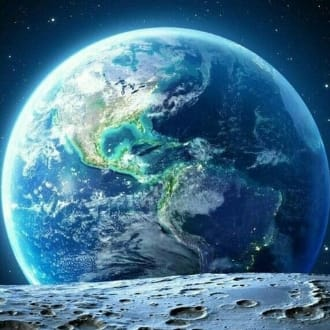
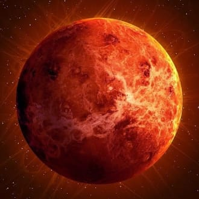
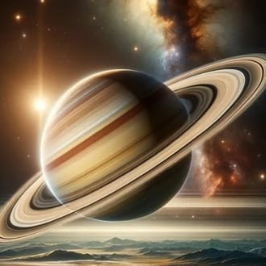
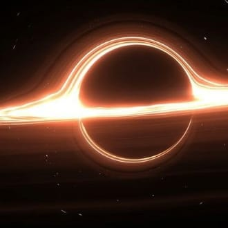
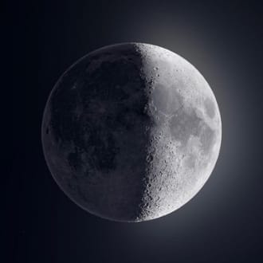

-
Terra
Descrição
"A Terra é considerada um planeta telúrico e possui sua estrutura interna dividida em: crosta terrestre
manto e núcleo. Além da estrutura interna, há também a externa que corresponde à litosfera, hidrosfera
biosfera e atmosfera, que são o que oferece as condições favoráveis para a existência de vida aqui." -
Marte
Descrição
Marte é o quarto planeta mais próximo do Sol e o segundo menor planeta do sistema solar, depois de Mercúrio, sendo consideravelmente menor que o planeta Terra.
Apresenta uma coloração avermelhada, pela presença de óxido de ferro na sua superfície. Por isso, recebeu o nome de Marte,
em homenagem ao deus romano da guerra. -
SATURNO
Descrição
"Saturno é o sexto planeta a partir do Sol e é o segundo maior planeta do Sistema Solar, ficando atrás apenas de Júpiter. Suas dimensões são 9 vezes maiores que as da Terra.
Devido à sua composição, é conhecido também como gigante gasoso e destaca-se pela beleza do sistema de anéis que o circunda, os quais são formados a partir de fragmentos de rocha e gelo." -
BURACO NEGRO
Descrição
"Buraco negro é um objeto astronômico que apresenta densidade infinita e um campo gravitacional bastante intenso,
capaz de atrair todos os elementos que cruzam o seu horizonte de eventos, conhecido como ponto de não retorno. Quando ultrapassa esse limiar, até mesmo a luz é absorvida pelo buraco negro. Sua origem ocorre principalmente por meio do colapso gravitacional de estrelas." -
Lua
Descrição
"A Lua é o único satélite natural da Terra e o quinto maior do Sistema Solar. Ela se formou, há aproximadamente 4,5 bilhões de anos, do impacto de um grande corpo celeste com o planeta, e desde então realiza a sua órbita ao redor dele e também do Sol.
A forma como a luz solar incide sobre a sua superfície e como a enxergamos da Terra produz as diferentes fases da Lua. Além disso, ela interage com o nosso planeta e dá origem às marés e aos eclipses."